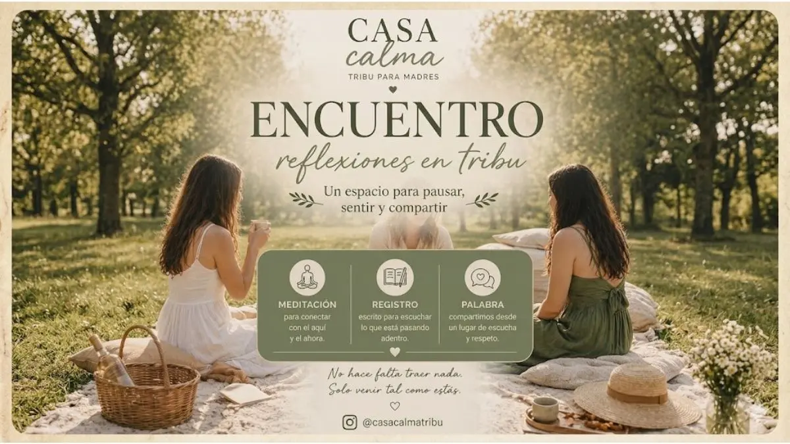

Comunidad y Relax
Un espacio pensado para nosotras. Te invitamos a compartir una tarde de charlas y conexión.
El objetivo es crear un momento de pausa en la rutina, rodeadas de verde y buena compañía. Un encuentro de comunidad para disfrutar lo que nos gusta hacer.